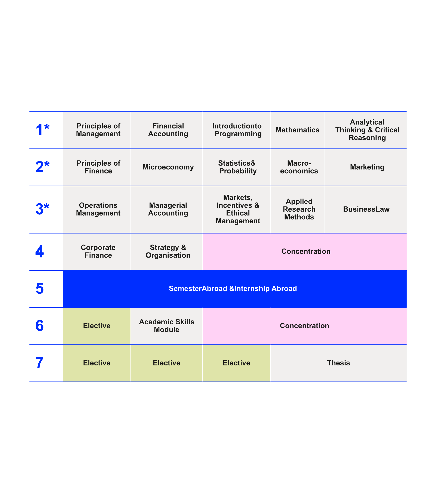
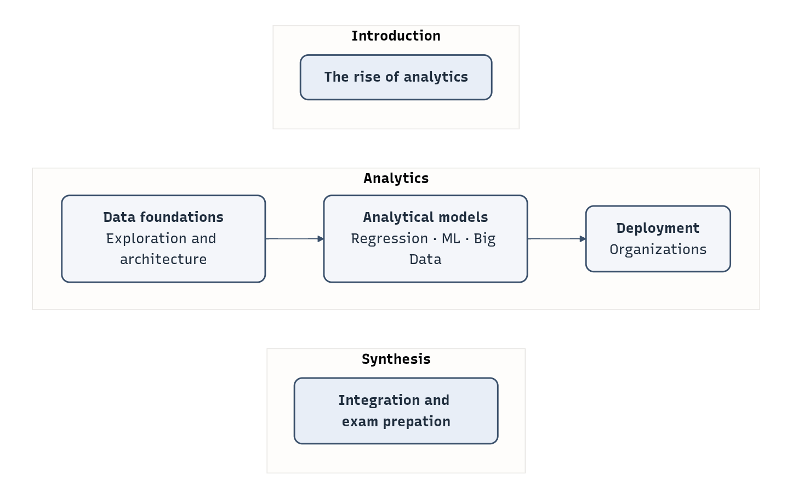

Prof. Dr. Gerit Wagner
(2026-03-23)
Academic background
Research interests
Teaching interests
Please answer the three questions. Then choose one optional area where you would like to share a bit more.
Optional:
Optional:


Business analytics refers to the computer-supported examination of data using mathematical models to drive decisions and actions within business situations (based on Davenport & Harris 2007).

Knowledge
Skills
pandas, scikit-learn, matplotlib).Competence
Engineering of production-grade analytical systems
Statistical theory
Mathematical optimization and simulation models
Autonomous or agentic decision systems
Workload: 150h total (44h in class, remaining: self-study and group project)
Assessment
Sessions:
Contact:
Individual circumstances
If you have family responsibilities, religious holidays, health-related matters, or other individual circumstances that may affect your participation or performance, please reach out early. We will work together to find a fair and workable solution.
Slides and materials
Selected literature
Bachelor’s theses: See SuSy and additional information on this page.
In SuSy, you can find more information on my primary research topics: